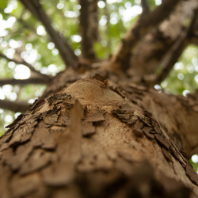
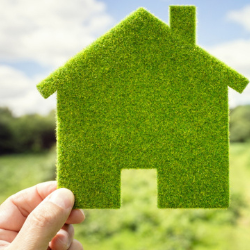
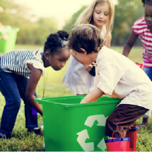
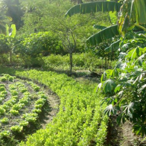

Plantar Hoje, Sustentar o Amanhã

Reflorestamento Inteligênte
Utilizando técnicas modernas e análise de dados de ponta, restauramos de áreas degragadas, escolhendo espécies adequadas ao solo e clima, garantindo equilíbrio ecológico.

Construções Sustentáveis
Empregamos projetos arquitetônicos e materiais que reduzem o consumo de energia, água e recursos naturais, minimizando impactos ambientais ao longo do tempo.

Consciência Ambiental
Através de práticas em familías e empresas, buscamos educar a sociedade sobre práticas sustentáveis e a importância da preservação dos recursos naturais para as futuras gerações.

Sistemas Agroflorestais
Estimulamos o cultivo agrícola com espécies florestais, promovendo conservação da biodiversidade, melhoria do solo e geração de renda sustentável para agricultores.